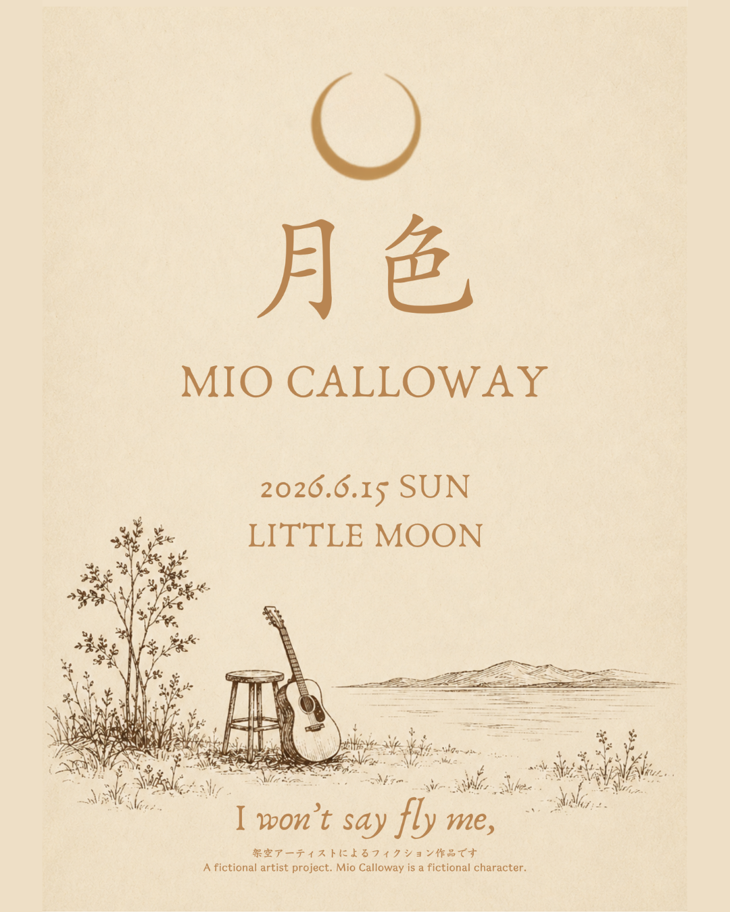

ワンマンライブ「月色」開催のお知らせ
Mio Calloway 一夜限りのワンマンライブ「月色（つきいろ）」を開催します。
2026年6月15日（日）／会場：Little Moon。
昼に見上げた月を、夜にもう一度。新しい二曲「白夜月」「Fly Me」を歌います。
※このライブ・会場・日付はすべてフィクションです。

新曲公開やライブ告知など、Mio Calloway の最新情報。
Mio Calloway 一夜限りのワンマンライブ「月色（つきいろ）」を開催します。
2026年6月15日（日）／会場：Little Moon。
昼に見上げた月を、夜にもう一度。新しい二曲「白夜月」「Fly Me」を歌います。
※このライブ・会場・日付はすべてフィクションです。

新しい二曲「白夜月（びゃくやづき）」と「Fly Me」を公開しました。 同じ月を、昼と夜に見た二つの歌。
夜のための一曲「Side B」を公開しました。
※フォトブック「Side B」は現在 SOLD OUT です。
ミニアルバム「Hours」を公開しました。 朝・昼・夕・夜、一日の時間をめぐる四つの歌。